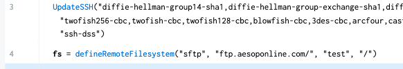
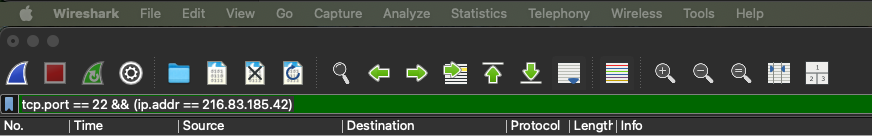
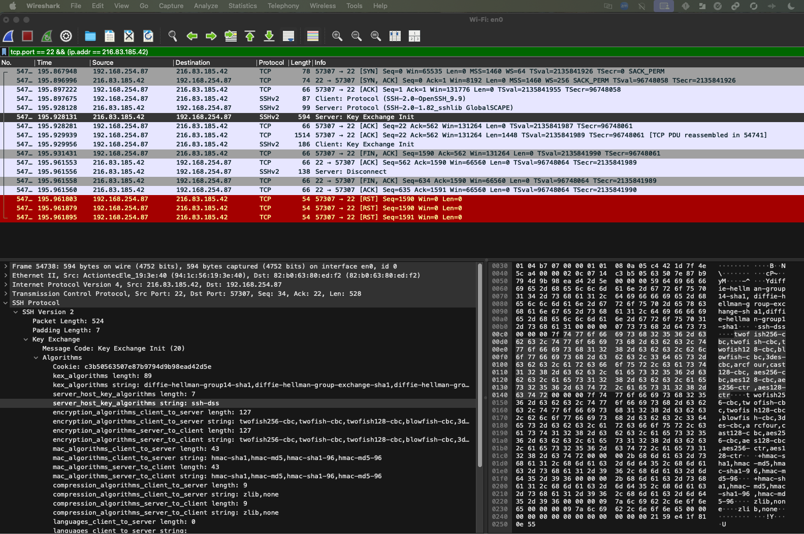
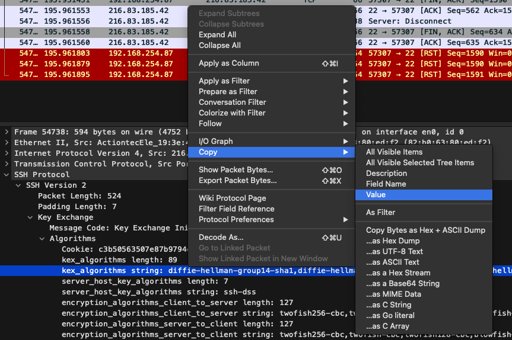

1. Import and placement
After importing UpdateSSH, place the call immediately above defineRemoteFilesystem.
2. Capture the server’s lists with Wireshark
Launch Wireshark on any computer that can reach ftp.aesoponline.com. Use nslookup to resolve the host (currently 216.83.185.42), then start a capture with the filter:
tcp.port == 22 && ip.addr == 216.83.185.42Click the blue fin icon to begin, then attempt an SFTP login (any credentials).
Stop the capture and locate the first frame labeled Server: Key Exchange Init. Expand it, then copy the lists for key‐exchange, host‐key, cipher, and MAC.
 3. Populate UpdateSSH
Paste each list into the corresponding UpdateSSH parameters:
kex_algorithms > desiredKexStrserver_host_key_algorithms > desiredHostKeyStrencryption_algorithms_client_to_server > desiredCipherStrmac_algorithms_client_to_server > desiredMacStr
Here are the values I captured:
desiredKexStr:
diffie-hellman-group14-sha1,diffie-hellman-group-exchange-sha1,diffie-hellman-group1-sha1
desiredCipherStr:
twofish256-cbc,twofish-cbc,twofish128-cbc,blowfish-cbc,3des-cbc,arcfour,cast128-cbc,aes256-cbc,aes128-cbc,aes256-ctr,aes128-ctr
desiredMacStr:
hmac-sha1,hmac-md5,hmac-sha1-96,hmac-md5-96
desiredHostKeyStr:
ssh-dssSave the action set and run the job. The transfer should now complete without “algorithm negotiation fail.”